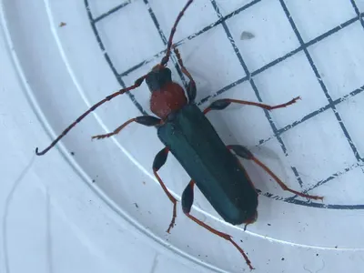

Wie groß ist welches Gartentier?
Körperlänge, bei Schmetterlingen die Flügelspannweite, bei der Weinbergschnecke das Gehäuse. Weil eine Blattlaus und ein Steinmarder so verschieden sind, wächst die Skala in Zehnerschritten: 1 mm, 1 cm, 10 cm.
Seitlich wischen, um die ganze Skala zu sehen.
Zum Beobachten im Garten
Alle Ausrüstungstipps ansehen- Beispielfoto · Foto: U.S. Fish and Wildlife Service Southeast Region, Public domain – Lizenzangaben im Bildnachweis

Bestimmungsbuch Tiere im Garten
Auswahl bei Amazon
Ein handliches Buch mit Fotos hilft, auch seltenere Besucher sicher zu erkennen.
Bei Amazon ansehen Bestimmungsbuch Tiere im Garten (Werbelink, öffnet in neuem Fenster) - Beispielfoto · Foto: Michel Helmecke, CC BY-SA 2.0 de – Lizenzangaben im Bildnachweis

Mein TippBecherlupe mit Vergrößerung
Auswahl bei Amazon
Insekten kurz einfangen, genau ansehen und wieder freilassen. Ideal auch für Kinder.
Bei Amazon ansehen Becherlupe mit Vergrößerung (Werbelink, öffnet in neuem Fenster) - Beispielfoto · Foto: Hustvedt, CC BY-SA 3.0 – Lizenzangaben im Bildnachweis
 Mein Tipp
Mein TippWildkamera für den Garten
Auswahl bei Amazon
Zeigt dir, wer nachts unterwegs ist: Igel, Marder, Fuchs oder Eichhörnchen. Achte auf unsichtbares Infrarot (No-Glow).
Bei Amazon ansehen Wildkamera für den Garten (Werbelink, öffnet in neuem Fenster)
Werbelink: Wenn du über diesen Link etwas kaufst, erhält der Gartentierkompass eine kleine Provision von Amazon. Für dich ändert sich am Preis nichts. Als Amazon-Partner verdiene ich an qualifizierten Verkäufen.